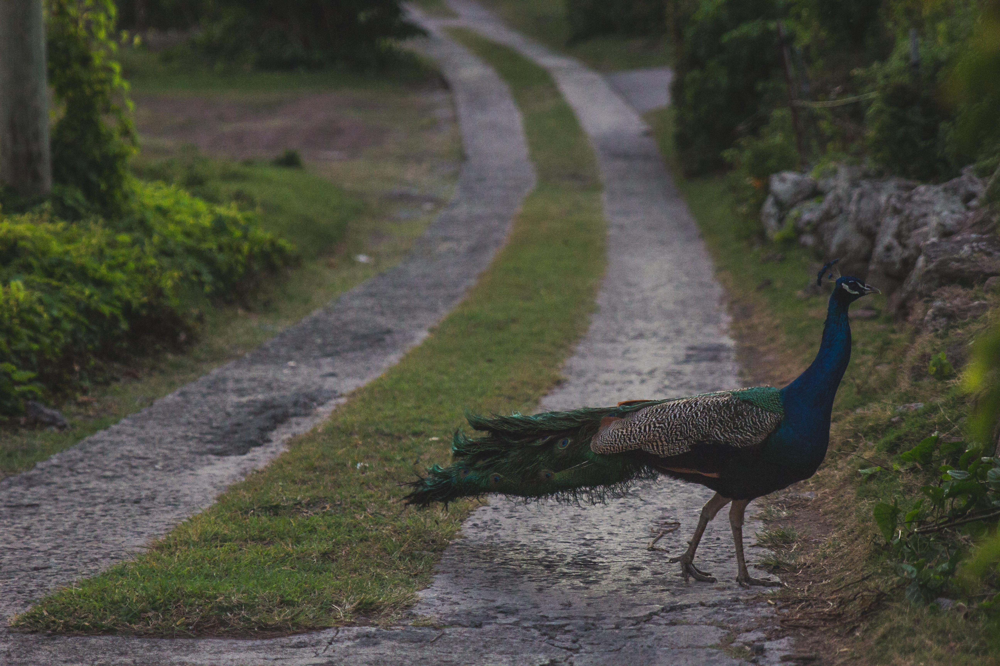

Ever since I've known myself I have always been into nature and wildlife. In my free time at home sometimes I journey to the rainforest to observe wildlife and photograph them. I enjoy hiking as it keeps me fit and often affords me with precious moments in life. On one particular afternoon I ran into a peacock on an afternoon stroll. Below is an image from my encounter. 
Home